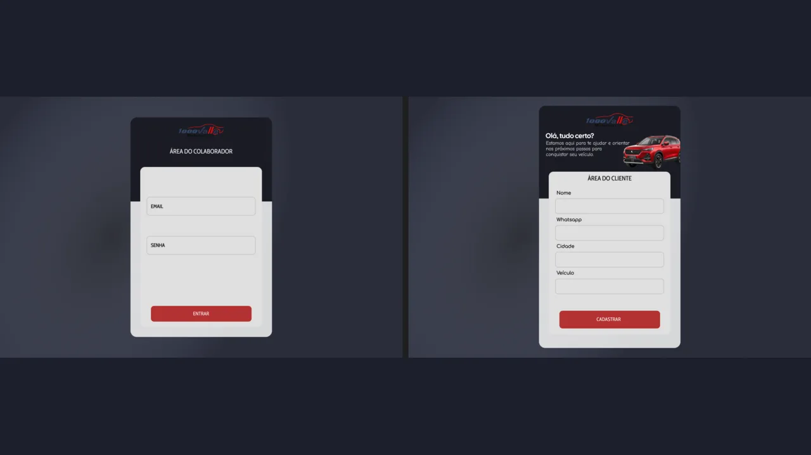
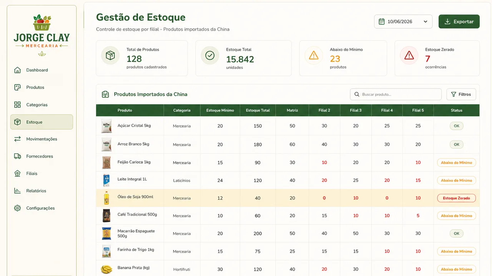
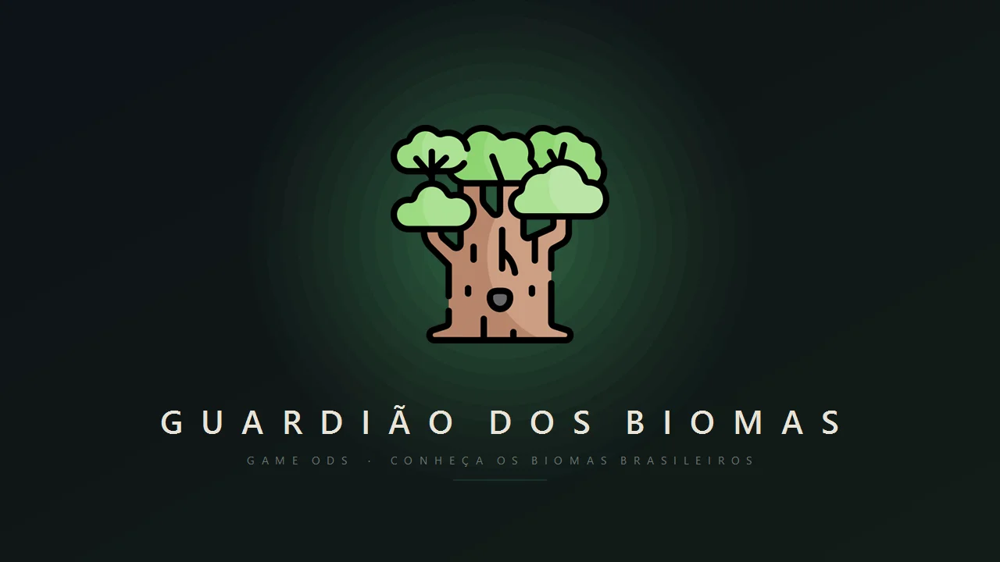

Back-end
- Node.js
- Express
- TypeScript
- Python
- FastAPI
- Java
- Spring Boot
- Go
- API REST
- JWT
- RBAC
Fatec Jacareí · DSM · 4º semestre
Desenvolvedor back-end · Estudante de Desenvolvimento de Software Multiplataforma
Construo o lado do sistema que ninguém vê e todo mundo depende: modelagem de dados, regras de negócio que não deixam a aplicação entrar em estado inválido e permissões verificadas no lugar certo. Vim do PCP para a tecnologia — e trouxe a mania de entender o processo antes de escrever a primeira linha.
Apresentação
Sou Gabriel Reginaldo Teodoro dos Santos, estudante de Desenvolvimento de Software Multiplataforma na Fatec Jacareí, hoje no 4º semestre, e desenvolvedor na Fenoxtec.
Minha entrada na tecnologia não foi direta. Trabalhei como auxiliar de PCP, acompanhando de perto processos de produção — e foi exatamente ali que percebi o quanto um sistema bem feito muda o dia de quem o usa, e o quanto um sistema mal feito atrapalha. Essa vivência virou meu jeito de programar: antes de abrir o editor, eu quero entender o processo, quem usa e qual problema precisa sair do caminho.
Hoje meu foco é back-end. É onde me sinto em casa: desenhar o modelo de dados, transformar regra de negócio em código que não aceita estado inválido, separar responsabilidades em camadas e garantir que cada permissão seja checada na camada certa. No ABP do 3º semestre construí o back-end de um sistema de gestão de leads do zero — autenticação JWT, RBAC de quatro papéis, Clean Architecture e uma máquina de estados que impede o lead de pular etapas. Foi ali que a preferência virou convicção.
Portfólio
Organizados em acadêmicos, profissionais e pessoais. Em cada um deles o destaque é a minha contribuição individual — o que exatamente saiu das minhas mãos.

Sistema web para gerenciar todo o ciclo de vida de um lead comercial — captação, qualificação, negociação e fechamento — com controle por loja, equipe e perfil de usuário, dashboards analíticos por papel e uma vitrine pública de veículos com fluxo de aprovação. Desenvolvido em parceria com a 1000 Valle Multimarcas, em Scrum, com três sprints de três semanas.

Projeto de sistema integrado para uma rede de cinco lojas de produtos importados: vendas via WhatsApp com chatbot e catálogo, controle de estoque multi-loja com alerta de mínimo, e PDV com emissão de nota e fechamento de caixa — todos sincronizados por um servidor central. A entrega foi o escopo completo: backlog, modelagem dos módulos e protótipos de alta fidelidade.
feature/telas.
Jogo de plataforma 2D em Godot sobre os Objetivos de Desenvolvimento Sustentável da ONU, feito para o desafio do Dia do Meio Ambiente da Fatec Jacareí. O jogador escolhe um Guardião — cada um representando um bioma brasileiro — e atravessa quatro fases que tratam dos ODS 15, 14, 7 e 13, enfrentando inimigos que personificam poluição, desmatamento e indústria suja. A única arma do jogador é plantar uma semente.
Back-end completo para a gestão de reservas de mesas de um restaurante, com mapa
visual das mesas em tempo real e um front-end componentizado em JavaScript puro
servido pelo próprio Express. As reservas mudam de estado sozinhas conforme o
relógio: reservado → ocupado → finalizado.
Portfólio da disciplina de Banco de Dados Não-Relacional: oito atividades práticas de MongoDB, do ambiente à modelagem, cobrindo documentos, consultas, operadores e agregações — além da reflexão sobre a evolução no semestre.
Consulta de clima em tempo real com TypeScript, Express e a API do OpenWeatherMap, com tratamento de erro para cidade inexistente e chave inválida.
3DSM · 1º Sem. 2026 · TypeScriptCRUD completo de lista de compras com TypeScript, Express e MongoDB/Mongoose, e front-end em HTML puro.
3DSM · 1º Sem. 2026 · TypeScriptCadastro de clientes em TypeScript, exercitando tipagem, validação de entrada e persistência.
3DSM · 1º Sem. 2026 · TypeScriptPrimeiros passos com o Prisma ORM: definição do schema, migrations e consultas tipadas.
3DSM · 1º Sem. 2026 · PrismaRevisão prática para a primeira avaliação, em JavaScript e TypeScript.
3DSM · 1º Sem. 2026 · JavaScriptFormulário HTML5 completo com todos os tipos de campo, validação nativa e versões com CSS interno e externo.
2DSM · 2º Sem. 2025 · HTML5 · CSS3Atividade com JavaServer Faces, explorando o modelo de componentes de servidor do ecossistema Java.
1DSM · 1º Sem. 2025 · JavaPlataforma de automação que monitora os Diários Oficiais dos estados brasileiros e da União, extrai as publicações que mencionam palavras-chave do setor de vistoria veicular — Detran, ECV, Renave, Senatran, entre outras — e dispara notificações por WhatsApp. Uma leitura manual que consumia parte de todos os dias virou um pipeline que roda sozinho.
Projeto interno da Fenoxtec — o repositório é privado, por isso não há link público.
A página que você está lendo. Construída do zero em HTML5, CSS3 e JavaScript puro — sem framework, sem etapa de build e sem uma única biblioteca de terceiros, respeitando as restrições técnicas do portfólio digital da Fatec. Tudo funciona a partir dos arquivos do próprio repositório.
prefers-reduced-motion.localStorage, respeitando a preferência do sistema na primeira visita.Ferramenta de linha de comando em Java que consulta a API pública do GitHub e exibe os dados de um usuário — nome, login, bio, quantidade de repositórios públicos e localização — com mensagem clara quando o usuário não existe.
HttpClient nativo do Java.ErroConsultaGitHubException) para separar falha de requisição de usuário inexistente.Plataforma de streaming de música com páginas por gênero — axé, clássica, eletrônica, hip hop e jazz —, player de áudio, tela de letras, busca e fluxo de cadastro e login. Projeto em equipe, publicado no GitHub Pages.
Site sobre o universo Marvel, entregue como projeto final do curso de desenvolvimento web da CoderHouse. Foi meu primeiro projeto publicado — e o começo de tudo o que veio depois.
Catálogo de séries em Java com Spring Boot, consumindo uma API pública e convertendo o JSON com Jackson.
2025 · Java · Spring BootConversor de moedas em Java consumindo a ExchangeRate-API, com log das conversões realizadas.
2025 · Java · Oracle ONESorteio de amigo secreto no navegador, com validação de entrada e manipulação de DOM em JavaScript.
2025 · JavaScript · Oracle ONEJogo de adivinhação com número aleatório, contagem de tentativas e síntese de voz do navegador.
2025 · JavaScript · Oracle ONEReconstrução da interface do Spotify em HTML e CSS, como exercício de layout e fidelidade visual.
2025 · HTML5 · CSS3Primeiro contato com React, consultando uma API de previsão do tempo e lidando com estado de carregamento.
2024 · ReactLoja virtual em React com Vite e SCSS: listagem de produtos, componentes reutilizáveis e carrinho.
2024 · React · ViteMinhas primeiras APIs REST em Go, explorando rotas, handlers e serialização JSON numa linguagem compilada.
2024 · GoMeu primeiro portfólio, de 2024. Fica aqui de propósito: comparar com esta página é a forma mais honesta de mostrar o quanto mudou em dois anos.
2024 · HTML5 · CSS3Informações complementares
Fatec Jacareí — Faculdade de Tecnologia de Jacareí
Tecnólogo, atualmente no 4º semestre. Turma de ingresso do 1º semestre de 2025.
Anhanguera
Cursado parcialmente até o 2º semestre, antes da migração para o curso de DSM na Fatec.
Formação em Java e front-end. Desafios entregues: conversor de moedas, catálogo de séries com Spring Boot, GitHubInspector, jogo do número secreto e amigo secreto.
2025Fundamentos de HTML, CSS e JavaScript, com projeto final publicado.
2023Estudo de Godot 4 e GDScript aplicado no projeto Guardião dos Biomas: máquinas de estado, física 2D, tilemaps e exportação do executável.
2026Avaliação do portfólio
O portfólio é avaliado nos semestres pares. Em cada avaliação, um pitch de cerca de um minuto apresentando quem sou, minhas áreas de interesse e a contribuição individual nas duas ABPs mais recentes.
2º Sem. 2025 — ABPs do 1º e 2º semestres.
Sem registro2º Sem. 2026 — ABPs do 3º e 4º semestres.
A publicarPrevisto para o 2º Sem. 2027 — ABPs do 5º e 6º semestres.
Em breveContato
Estou aberto a oportunidades e trocas na área de desenvolvimento back-end. O melhor caminho é o LinkedIn; o código está todo no GitHub.